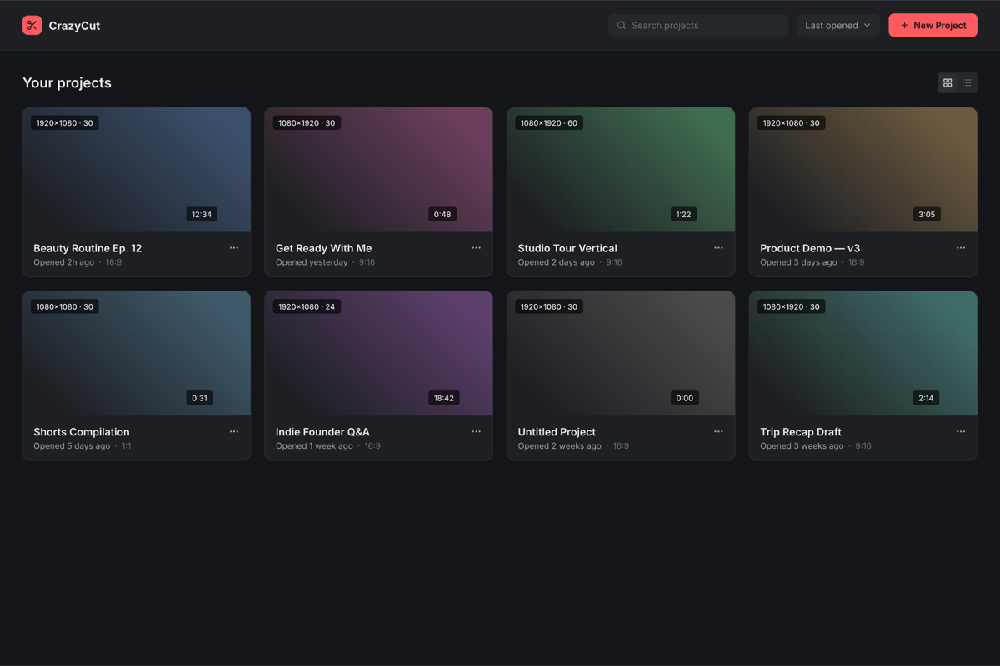

Edit fast. Export clean.
Own your tool.
CrazyCut is a native desktop video editor for solo creators. Real multi-track timeline, keyframes that behave, hand-drawn region tracking, and AI-proposed Shorts. Everything runs locally on your hardware: no account, no watermark, no subscription.

Import and auto-proxy
Drop in MP4, MOV, MKV, or ProRes. CrazyCut probes, thumbnails, and generates lightweight editing proxies in the background so 4K scrubs under 100ms.
Cut, track and AI shorts
Multi-track timeline with real ripple edits and JKL keys. Draw a box over any subject to track motion offline, or transcribe with Whisper to propose Shorts.
Export clean and fast
Background render queue with presets for YouTube 4K, TikTok, Shorts, and master ProRes. The frame you approve in preview is what renders byte for byte.
Track anything. Just draw the box.
No cloud uploads, no heavy model downloads. You draw a bounding region once, and CrazyCut solves motion frame by frame, perspective included, entirely on your machine.
Multiple regions per clip
Track a face and a logo in the same shot. Each region solves independently with sub-pixel precision.
Pin anything to motion
Swap a region for an image or text and it rides the motion: censor bars, dynamic labels, or corner pins.
Bake into keyframes
Turn tracked motion paths into standard bezier keyframes anytime and hand-edit from there.
Everything a solo creator actually needs.
No bloated plugin marketplaces, no node graphs. The parts of an NLE you open every day, crafted for speed and documented with stable keyboard shortcuts.
Long video in, shorts out
Feed CrazyCut a long take. Local Whisper transcribes it in seconds, proposes standalone moments, and reframes them to 9:16 for TikTok and Reels.
Native C++17 core
Multi-threaded decoding and compositing via FFI. 4K rushes scrub smoothly with sub-100ms response time on Apple Silicon and Windows x64.
Multi-track timeline
Unlimited video and audio tracks, real ripple edits, snapping, and responsive JKL transport. The playhead never waits on your hand.
Keyframes with bezier curves
Animate position, scale, rotation, and opacity with clear handles on visual easing curves. Stack color, blur, and 9 blend modes in one inspector.
LUFS normalization and mixer
Per-track audio mixer with clip waveforms, parametric EQ, compressor, and automatic -14 LUFS loudness mastering for YouTube and podcasts.
Background render queue
The render queue runs in the background while you keep editing. Pick a preset and export clean files with zero watermarks.
Automate your video processing with CrazyCut
No subscriptions. No watermarks. 100% Free and open source desktop software.
Cloud SaaS editors
Browser-based tools
- Cloud upload required for every clip
- 1080p limit on entry tiers, 4K locked
- Export watermarks unless paid
- Monthly AI transcription minute caps
- Mandatory account and telemetry
Free and open source
100% Local Native Video Editor
- 100% Local: Files never leave your disk
- Zero Watermarks: Clean exports always
- Unlimited 4K & ProRes: No bitrate caps
- Local Whisper AI: Unlimited transcription
- Area Tracking: Offline computer vision
- No Account: Install, open, and cut
- Telemetry: 100% Off by default
Heavy studio suites
Complex Hollywood suites
- Full color grading node graphs
- 50GB install size and heavy GPU footprint
- Steep multi-month learning curve
- Overkill for solo YouTube and Shorts workflow
- Proprietary closed-source code
Same claims. Different fine print.
Everyone says "free" and "fast". Here is what that actually includes.
| Capability | CrazyCut | DaVinci (Free) | CapCut | Canva | Kdenlive |
|---|---|---|---|---|---|
| License | MIT Open Source | Proprietary | Proprietary | Proprietary | GPL |
| Watermarks & Export Caps | None | None | Feature Gated | Tier Limited | None |
| AI Transcription & Shorts | Local (Whisper) | Studio only ($295) | Cloud (Limits) | Cloud (Paid) | Plugin |
| Area Object Tracking | Built-in (Offline CV) | Complex Nodes | Cloud / Basic | No | Manual Setup |
| Offline Capability | 100% Offline | 100% Offline | Partial | No (Cloud) | 100% Offline |
| Engine Performance | C++17 + FFI | Native C++ | Web / Electron | Cloud / Web | C++ MLT |
| Account & Telemetry | No Account · Telemetry Off | Account required | Mandatory login | Mandatory login | No account |
Questions people ask before installing.
Details on licensing, privacy, Gatekeeper, and system requirements.
There is no catch and no paid tier. CrazyCut is MIT licensed open source: use it for commercial projects, modify the code, and export your edits with zero watermarks. If you want to support development, star the repository on GitHub or file detailed issues.
Nowhere. Media files open from your local drive and all processing happens locally. AI transcription runs on your machine using whisper.cpp. If you optionally configure a cloud LLM for script analysis, only plain transcript text is sent: your video and audio never leave your computer.
Official macOS release DMGs are signed with an Apple Developer ID certificate and notarized by Apple, so macOS Gatekeeper allows you to install and open CrazyCut without warning prompts.
Windows builds from open-source GitHub releases are currently not signed with an EV certificate, which triggers the generic SmartScreen warning. Click "More info" and "Run anyway" when installing official releases from our GitHub repository.
macOS 13 or later (Apple Silicon or Intel) and Windows 10 or 11 on 64-bit x86 systems. 8GB of RAM recommended (16GB for 4K workflows). Linux packaging is planned for future releases.
The app's own code is MIT. It ships with an ffmpeg build that includes x264 and x265, which are GPL, so the bundled binary carries that license. Your project files and exports are yours regardless.